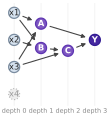
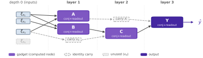
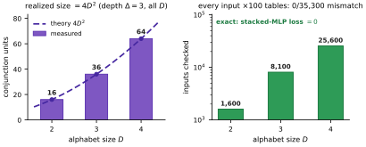

This note constructs an exact realization of any computation graph as a ReLU MLP whose neuron groups are the graph’s nodes, and transfers the discrete complexity \((D,N,r)\) to network depth and width.
-1.8ex plus -0.4ex minus -0.2ex1.0ex plus 0.2exComputation graphs and their complexity
Definition 1 (Computation graph). A computation graph is a DAG \(G=(V,E)\) in which each node \(v\) carries a finite alphabet \(\Sigma_v\) (values \(z_v\in\Sigma_v\)) and a parent set \(\mathrm{pa}(v)=\{u:(u,v)\in E\}\), and each non-input node carries a lookup table \(g_v:\prod_{u\in\mathrm{pa}(v)}\Sigma_u\to\Sigma_v\), \(z_v=g_v\big((z_u)_{u\in\mathrm{pa}(v)}\big)\). Vertices partition as \(V=V_{\mathrm{in}}\sqcup V_{\mathrm{hid}}\sqcup V_{\mathrm{out}}\); inputs have \(\mathrm{pa}(v)=\varnothing\) and are clamped, \(z_v=x_v\) for \(x\in\mathcal{X}:=\prod_{v\in V_{\mathrm{in}}}\Sigma_v\). Evaluating \(G\) computes \(z_v\) in topological order; the function computed by \(G\) is \(f_G(x)=h\big((z_v)_{v\in V_{\mathrm{out}}}\big)\), with \(h\) the identity when \(|V_{\mathrm{out}}|=1\).
We track four parameters, the last of which, \(\Delta\), governs network depth: the number of values \(D:=\max_v|\Sigma_v|\), the node count \(N:=|V|\) (with \(N_{\mathrm{hid}}:=|V_{\mathrm{hid}}|\)), the max fan-in \(r:=\max_v|\mathrm{pa}(v)|\), and the depth \(\Delta:=\max_v\mathrm{dep}(v)\le N\), where \(\mathrm{dep}(v)=0\) on \(V_{\mathrm{in}}\) and \(\mathrm{dep}(v)=1+\max_{u\in\mathrm{pa}(v)}\mathrm{dep}(u)\) otherwise. The quantity that transfers to the network is the total table content: node \(v\) has \(\prod_{u\in\mathrm{pa}(v)}|\Sigma_u|\le D^{\,r}\) rows, each storing one symbol of \(\Sigma_v\) (\(\log_2|\Sigma_v|\le\log_2 D\) bits), so the description length is \[\begin{equation} \label{eq:desc} |G|\ :=\ \sum_{v\notin V_{\mathrm{in}}}\Big(\textstyle\prod_{u\in\mathrm{pa}(v)}|\Sigma_u|\Big)\log_2|\Sigma_v| \ \le\ N\,D^{\,r}\log_2 D . \end{equation}\] We use a common alphabet size \(|\Sigma_v|=D\) for readability; the per-node form replaces \(D^{\,r}\) by \(\prod_{u\in\mathrm{pa}(v)}|\Sigma_u|\) throughout, and no structural argument uses equality of the alphabets.
Running example \(G_0\).
Figure 1(a) shows \(\mathrm{pa}(A)=\{x_1,x_3\}\), \(\mathrm{pa}(B)=\{x_1,x_2\}\), \(\mathrm{pa}(C)=\{B,x_3\}\), \(\mathrm{pa}(Y)=\{A,C\}\), \(V_{\mathrm{out}}=\{Y\}\), \(x_4\) isolated: fan-in \(r=2\), depths \(1,1,2,3\) so \(\Delta=3\), \(N=8\), and four \(D^2\)-entry tables (\(4D^2\) total). Nodes \(x_1\) and \(x_3\) are shared — \(x_1\) feeds \(A,B\) and \(x_3\) feeds \(A,C\) — exercising re-use rather than a disjoint partition.


-1.8ex plus -0.4ex minus -0.2ex1.0ex plus 0.2exAn exact MLP encoding
We encode each node value as a one-hot indicator. Write \(\xi_v:=e_{z_v}\in\{0,1\}^{|\Sigma_v|}\) for the indicator of node \(v\); for inputs, \(\xi_v=e_{x_v}\).
Per-node gadget.
Fix a non-input \(v\) with parents \(p_1,\dots,p_k\), \(k\le r\). A conjunction layer carries one unit per joint pattern \(a\in\prod_i\Sigma_{p_i}\), \[\begin{equation} \label{eq:conj} h^v_a\ =\ \mathrm{ReLU}\!\Big(\textstyle\sum_{i=1}^{k}\xi_{p_i}[a_i]-(k-1)\Big) \ =\ \mathbf{1}\big[z_{p_i}=a_i\ \forall i\big], \end{equation}\] the argument being an integer equal to \(k\) iff every parent matches and \(\le k-1\) otherwise; so the vector \(h^v\), with one component \(h^v_a\) per joint pattern \(a\), is the one-hot indicator of the joint parent value. A readout \(U^v\in\{0,1\}^{|\Sigma_v|\times\prod_i|\Sigma_{p_i}|}\), \(U^v_{c,a}=\mathbf{1}[g_v(a)=c]\), gives \[\begin{equation} \label{eq:readout} \xi_v\ =\ U^v h^v\ =\ e_{g_v(z_{p_1},\dots,z_{p_k})}. \end{equation}\] The matrix \(U^v\) is the table; carrying no nonlinearity, it folds into the next stage’s affine, so each graph depth costs one ReLU stage. Folding has a price: when a consumer with fan-in \(k\) reads a computed parent \(p\) (own fan-in \(r_p\)) from the preceding stage, the composed block carries exactly \(D^{\,r_p+k-1}\) nonzeros — for every table, since the block has at most \(D\) distinct rows whose supports \(g_p^{-1}(c)\) partition the \(D^{\,r_p}\) columns (\(\sum_c|g_p^{-1}(c)|=D^{\,r_p}\)), each repeated over the \(D^{\,k-1}\) completions of the pattern. A node consumed more than one depth ahead is carried by the identity (ReLU fixes nonnegative one-hot entries); a computed one is first materialized once (\(U^v\) inside a later stage’s affine, \(D^{\,r_v}\) nonzeros), then carried at cost \(D\) per stage. The prediction is \(\hat y=\omega^\top\xi_Y\) (identity if the target is symbolic).
Proposition 1 (Exact realization and size). Let \(G\) be a computation graph as above, with \(W_{\max}:=\max_d|\{v:\mathrm{dep}(v)=d\}|\) the maximum number of nodes at one depth. The ReLU network \(\mathcal{E}_{\mathrm{MLP}}(G)\) satisfies \(\mathcal{E}_{\mathrm{MLP}}(G)(x)=f_G(x)\) for every \(x\in\mathcal{X}\), using depth \(\Delta\) (hidden ReLU stages), maximum width \(m=O\!\big(W_{\max} D^{\,r}+N D\big)\), and \(\sum_{v\notin V_{\mathrm{in}}}\prod_{u\in\mathrm{pa}(v)}|\Sigma_u|\le N D^{\,r}\) conjunction units (plus \(O(N D\,\Delta)\) carry units), with \(O(N r D^{\,2r-1}+N D\,\Delta)\) nonzero weights in all (each folded parent slot costs exactly \(D^{\,r_p+k-1}\)).
Proof. Induction on depth. At depth \(0\) the input groups hold \(\xi_v=e_{x_v}\) by construction. Assume that at the input to stage \(d\) every node \(u\) with \(\mathrm{dep}(u)<d\) that is still needed has its indicator \(\xi_u\) available (by direct computation or carry). For each \(v\) with \(\mathrm{dep}(v)=d\) the parents have depth \(<d\), so their indicators are present; [eq:conj] produces the joint indicator \(h^v\) and [eq:readout] produces \(\xi_v\). Carries forward the remaining needed indicators by \(\mathrm{ReLU}\circ\mathrm{Id}\). Thus the hypothesis holds at stage \(d+1\). At \(d=\Delta\) the output indicator \(\xi_Y\) is available and \(\omega^\top\xi_Y\) returns the readout. The size statement counts the units in [eq:conj]–[eq:readout] per node and the carries; for the weights, each folded \(U^p\) contributes \(D^{\,r_p+k-1}\) per consumer slot (\(\le rD^{\,2r-1}\) per node), one-time materializations \(D^{\,r_v}\) (absorbed), and carries \(D\) per stage. ◻
Remark 1. For worst-case tables the gadget storage \(\Theta(N D^{\,r})\) (weights) is order-optimal up to \(\log\) factors, since an arbitrary table costs \(\Theta(D^{\,r}\log D)\) bits per node by [eq:desc]; structured \(g_v\) (linear, low-rank, monotone) compress below it. Across consecutive stages the forwarded activation has width \(O(W_{\max} D^{\,r}+N D)\).
Complexity, and the dense comparison.
Each conjunction unit is wired only to its \(\le r\) parents, and each readout — one nonzero per column of \(U^v\) standing alone — costs \(D^{\,r_v+k-1}\) per fan-in-\(k\) consumer slot once folded, so the gadgets carry \(O(N r D^{\,2r-1})\) nonzero weights — the table content \(|G|\) of [eq:desc] up to \(rD^{\,r-1}\) and \(\log D\) factors — and the identity carries add \(O(N D\Delta)\) (negligible once \(\Delta=O(rD^{\,r-1})\)), at depth \(\Delta\) and width \(m=O(W_{\max}D^{\,r}{+}ND)\). A dense ReLU MLP of the same depth and width is fully connected, with \(\Theta(\Delta\,m^2)\) weights; the exact encoding is the sparse subnetwork whose wiring is \(G\), using only an \(O(N r D^{\,2r-1}{+}ND\Delta)/\Theta(\Delta m^2)\) fraction of them.
| depth | width | nonzero weights | |
|---|---|---|---|
| \(\mathcal{E}_{\mathrm{MLP}}(G)\) (exact encoding) | \(\Delta\) | \(O(W_{\max}D^{\,r}{+}ND)\) | \(O(N r D^{\,2r-1}{+}ND\Delta)\) |
| dense MLP, same depth & width | \(\Delta\) | \(O(W_{\max}D^{\,r}{+}ND)\) | \(\Theta\!\big(\Delta\,(W_{\max}D^{\,r}{+}ND)^2\big)\) |
Size and validation.
For \(G_0\) at \(D=4\): the four gadgets use \(4D^2=64\) conjunction units and \(2D^3{+}8D^2{+}D=260\) nonzero weights at depth \(\Delta=3\), the folded \(B{\to}C\) and \(C{\to}Y\) slots costing \(D^3\) apiece (widest stage — \(A,B\) plus the \(x_3\) carry — \(2D^2{+}D=36\) units). A dense depth-\(3\) MLP at the width bound \(W_{\max}D^{\,r}{+}ND=64\) holds \(3\cdot64^2\approx1.2\times10^4\) weights — about \(47\times\) more. An accompanying script reproduces the construction bit-exactly (Figure 2): enumerating all \(D^{|V_{\mathrm{in}}|}\) inputs for \(D\in\{2,3,4\}\) across \(100\) random table draws each (\(35{,}300\) checks) gives \(0\) mismatches, \(4D^2\) conjunction units (\(16/36/64\)), \(\Delta=3\) ReLU stages, and per-layer nonzero weights \(\big(4D^2{+}D,\;D^3{+}2D^2,\;D^3{+}D^2\big)\) plus a \(D^2\) head — matching the formula on every draw — and a stacked ReLU MLP assembled from the per-depth weights attains exactly zero loss.
